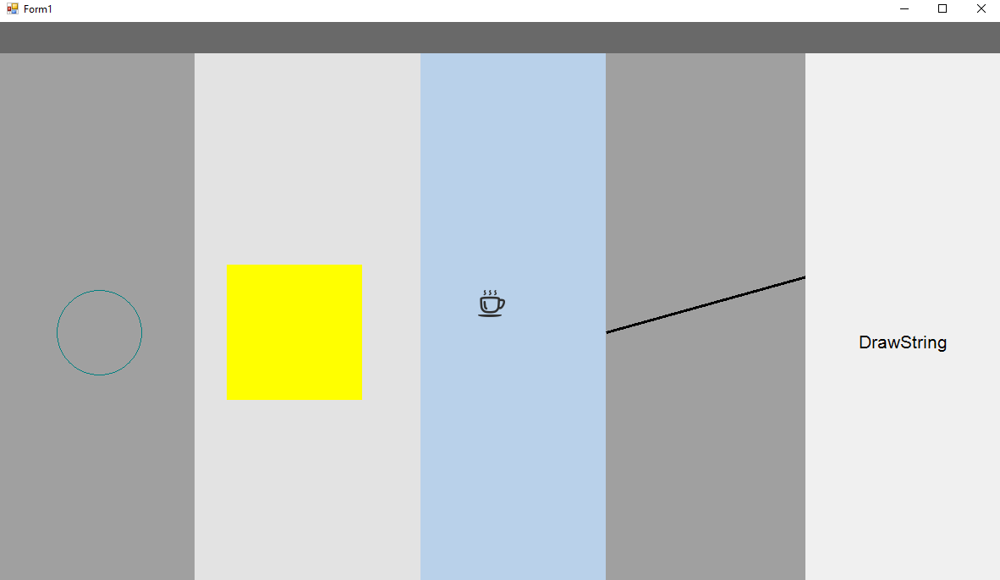

Panele, na których wykorzystano metody z klasy Graphics
Dla każdego z paneli wykorzystuję event Paint, gdzie umieszczam poszczególne metody
private void panel2_Paint(object sender, PaintEventArgs e)
{
DrawEllipse(e);
}
private void panel3_Paint(object sender, PaintEventArgs e)
{
FillRectangle(e);
}
private void panel4_Paint(object sender, PaintEventArgs e)
{
DrawIconInt(e);
}
private void panel5_Paint(object sender, PaintEventArgs e)
{
DrawLine(e);
}
private void panel6_Paint(object sender, PaintEventArgs e)
{
DrawStringFloat(e);
}
// rysowanie elipsy
private void DrawEllipse(PaintEventArgs e)
{
Graphics g = e.Graphics;
int width = ClientRectangle.Width;
int height = ClientRectangle.Height;
int r = 50;
g.DrawEllipse(Pens.Teal, width / 10 - r, height / 2 - r, 2 * r, 2 * r);
}
// rysowanie prostokąta
private void FillRectangle(PaintEventArgs e)
{
Graphics g = e.Graphics;
int width = ClientRectangle.Width;
int height = ClientRectangle.Height;
int r = 80;
g.FillRectangle(Brushes.Yellow, width / 10 - r, height / 2 - r, 2 * r, 2 * r);
}
// rysowanie ikonki
private void DrawIconInt(PaintEventArgs e)
{ // sprawdź czy plik istnieje
try
{
Icon newIcon = new Icon("icon.ico");
int width = ClientRectangle.Width;
int height = ClientRectangle.Height;
int r = 50;
e.Graphics.DrawIcon(newIcon, width / 10 - r, height / 2 - r);
}
catch (FileNotFoundException ex)
{
Console.Write(ex);
}
}
// rysowanie linii
private void DrawLine(PaintEventArgs e)
{
Pen blackPen = new Pen(Color.Black, 3);
int width = ClientRectangle.Width;
int height = ClientRectangle.Height;
// Tworzenie punktow koncowych
PointF point1 = new PointF(0, height/2);
PointF point2 = new PointF(width/2, height/4);
e.Graphics.DrawLine(blackPen, point1, point2);
}
// rysowanie stringa
public void DrawStringFloat(PaintEventArgs e)
{
String drawString = "DrawString";
int width = ClientRectangle.Width;
int height = ClientRectangle.Height;
Font drawFont = new Font("Arial", 16);
SolidBrush drawBrush = new SolidBrush(Color.Black);
float x = width / 20;
float y = height / 2;
e.Graphics.DrawString(drawString, drawFont, drawBrush, x, y);
}